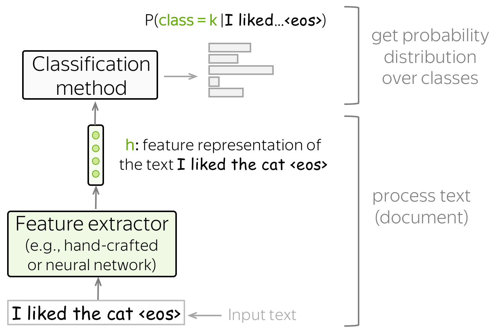

Recopilación de datos

Clasificación multiclase:
hay muchas etiquetas, pero solo una es correcta

Clasificación binaria:
hay dos etiquetas y solo una de ellas es correcta

Clasificación multiclase:
hay muchas etiquetas y varias pueden ser correctas
Text classification is an extremely popular task. You enjoy working text classifiers in your mail agent: it classifies letters and filters spam. Other applications include document classification, review classification, etc.
Text classifiers are often used not as an individual task, but as part of bigger pipelines. For example, a voice assistant classifies your utterance to understand what you want (e.g., set the alarm, order a taxi or just chat) and passes your message to different models depending on the classifier's decision. Another example is a web search engine: it can use classifiers to identify the query language, to predict the type of your query (e.g., informational, navigational, transactional), to understand whether you what to see pictures or video in addition to documents, etc.
Since most of the classification datasets assume that only one label is correct (you will see this right now!), in the lecture we deal with this type of classification, i.e. the single-label classification. We mention multi-label classification in a separate section (Multi-Label Classification).
Datasets for Classification
Datasets for text classification are very different in terms of size (both dataset size and examples' size), what is classified, and the number of labels. Look at the statistics below.
| Dataset | Type | Number of labels | Size (train/test) | Avg. length (tokens) |
|---|---|---|---|---|
| LaSolanaNews | tema | 7 | 1093 | 200 |
| IMDb Review | opinión | 2 | 25k / 25k | 271 |
The most popular datasets are for sentiment classification. They consist of reviews of movies, places or restaurants, and products. There are also datasets for question type classification and topic classification.
To better understand typical classification tasks, below you can look at the examples from different datasets.
How to: pick a dataset and look at the examples to get a feeling of the task. Or you can come back to this later!
Dataset Description (click!)
LaSolanaNews dataset is a collection of 1093 newspaper articles in Spanish about the town of La Solana (Ciudad Real, Castilla-La Mancha) from March 2010 until February 2024. It emerges as an attempt to promote digitalization in rural areas, laying the groundwork for its use in more advanced NLP task in the future, such us text classification, author prediction or finetuning RAG models.
Etiqueta: cultura
Autor: María Muñoz
Fecha:2023-07-04
Título:
Más de 10.000 personas pasaron por el 'Oasis Sound' en su segunda edición
Etiqueta: sociedad
Autor: Paulino Sánchez
Fecha:2010-03-17
Título:
Paqui Ruiz: "La TDT supondrá un cambio como lo fue el paso del blanco y negro al color"
Etiqueta: deporte
Autor: Aurelio Maroto
Fecha:2017-10-04
Título:
La Solana huye de euforias en vísperas del clásico contra el Manzanares
Dataset Description (click!)
IMDb is a large dataset of informal movie reviews from the Internet Movie Database. The collection allows no more than 30 reviews per movie. The dataset contains an even number of positive and negative reviews, so randomly guessing yields 50% accuracy. The reviews are highly polarized: they are only negative (with the highest score 4 out of 10) or positive (with the lowest score 7 out of 10).
For more details, see the original paper.
Label: negative
Review
Hobgoblins .... Hobgoblins .... where do I begin?!?
This film gives Manos -
The Hands of Fate and Future War a run for their money as the worst film ever made .
This one is fun to laugh at , where as Manos was just painful to watch . Hobgoblins will
end up in a time capsule somewhere as the perfect movie to describe the term : " 80 's cheeze " .
The acting ( and I am using this term loosely ) is atrocious , the Hobgoblins are some of the worst
puppets you will ever see , and the garden tool fight has to be seen to be believed .
The movie was the perfect vehicle for MST3 K , and that version is the only way to watch this mess .
This movie gives Mike and the bots lots of ammunition to pull some of the funniest one -
liners they have ever done . If you try to watch this without the help of Mike and the bots .....
God help you ! !
Label: positive
Review
One of my favorite movies I saw at preview in Seattle . Tom Hulce was amazing , with out words could
convey his feelings / thoughts . I actually sent Mike Ferrell some donation money to help the film
get distributed . It is good . System says I need more lines but do not want to give away plot stuff .
I was in the audience in Seattle with Hulce and director , a writer I think and Mike Ferrell .
They talked for about an hour afterwords . Not really a dry eye in the house . Why Hollywood continues
to be stupid I do not know . ( actually I do know , it is our fault , look what we watch)Well you get
what you pay for guys . Get this and see it with someone special . It is a gem .
Label: negative
Review
Okay , if you have a couple hours to waste , or if you just really hate your life , I would say watch
this movie . If anything it 's good for a few laughs . Not only do you have obese , topless natives ,
but also special effects so bad they are probably outlawed in most states . Seriuosly ,
the rating of ' PG ' is pretty humorous too , once you see the Native Porn Extravaganza .
I would n't give this movie to my retarded nephew . You could n't even show this to Iraqi
prisoners without violating the Geneva Convention . The plot is sketchy , and cliché , and dumb ,
and stupid . The acting is horrible , and the ending is so painful to watch I actually began pouring
salt into my eye just to take my mind off of the idiocy filling my TV screen .
General View
Here we provide a general view on classification and introduce the notation. This section applies to both classical and neural approaches.
We assume that we have a collection of documents with ground-truth labels. The input of a classifier is a document \(x=(x_1, \dots, x_n)\) with tokens \((x_1, \dots, x_n)\), the output is a label \(y\in 1\dots k\). Usually, a classifier estimates probability distribution over classes, and we want the probability of the correct class to be the highest.
Get Feature Representation and Classify
Text classifiers have the following structure:

- feature extractor
A feature extractor can be either manually defined (as in classical approaches) or learned (e.g., with neural networks). - classifier
A classifier has to assign class probabilities given feature representation of a text. The most common way to do this is using logistic regression, but other variants are also possible (e.g., Naive Bayes classifier or SVM).
In this lecture, we'll mostly be looking at different ways to build feature representation of a text and to use this representation to get class probabilities.